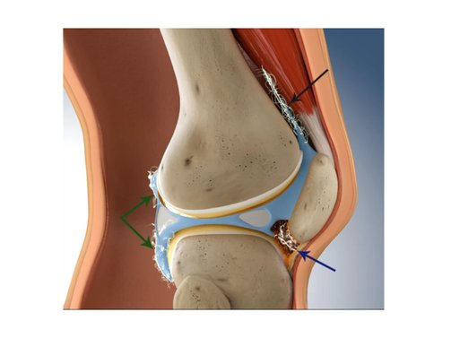
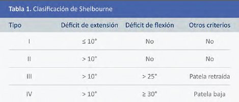

Qué es, cómo evitarlo y rutina ejercicios
Especialista en readaptación de lesiones de rodilla
Vamos a hacer una cosa. Podría meter los artículos que tengo y pedirle a ChatGPT que me haga un resumen y poneros aquí un vocabulario super complejo. Pero no va a ser así. Voy a intentar escribirlo de tal forma que no te cueste comprender qué es y por qué se produce, sin tecnicismos complejos.
La artrofibrosis es la formación excesiva de tejido cicatricial intraarticular que limita el movimiento de la articulación. Es bastante común tras una cirugía de cruzado, por desgracia.
Existen varios tipos:
-Localizada: suele afectar una zona concreta (como el fondo de saco suprapatelar) y puede tratarse de forma más sencilla si se detecta a tiempo.
-Difusa: posiblemente la peor. Afecta varias zonas de la rodilla al mismo tiempo, de forma muy marcada y con dolor constante. Suele requerir cirugía para recuperar el movimiento (artrolisis o movilización bajo anestesia (MBA)).
-Extraarticular: afecta tejidos por fuera de la articulación (como el tendón rotuliano), también puede ser limitante, pero suele ser más manejable que la difusa.


La artrofibrosis se da por una respuesta exagerada de cicatrización, que genera un exceso de tejido fibroso en la articulación. Es como que el cuerpo se “asusta” y genera más protección de la que debería.
Las adherencias son como "puentes de tejido cicatricial" que se forman entre estructuras que no deberían estar unidas (por ejemplo, entre el tendón rotuliano y el tejido subyacente).
Para que se entienda más fácil, las adherencias son como “telarañas internas” que se forman tras la cirugía. Si no se controlan, pueden multiplicarse y provocar artrofibrosis, que es lo que de verdad limita el movimiento.
Suele ser bastante habitual que tras una cirugía se paute reposo, lo que provoca que al no haber apenas movimiento, esos “sedimentos” se queden en lugar de romperse. Para que me entiendas, es como si nunca barres una habitación de tu casa, pues acabará acumulando mucha suciedad y luego será más difícil limpiarla.
Entonces... ¿cómo puedo prevenir que esto se producza?
Realizando una rutina de movilidad de rodilla desde el día 1 tras la cirugía. En la siguiente página, te dejo 4 ejercicios que puede hacer por norma general todo el mundo tras su cirugía (no obstante, te recomiendo contrastarlo con nosotros por mensaje privado o con otro profesional de la salud, por si acaso)
Mira la siguiente página
Mira este caso real de un deportista con artrofibrosis que consiguió recuperar su movilidad gracias a una rutina individualizada incluso cuando parecía que ya era imposible 👉 Clica aquí
Si después de leer esta guía te surgen dudas sobre tu caso concreto o sientes que tu rodilla no está progresando como debería, no te quedes con la incertidumbre.
Cada rodilla y cada proceso es distinto, y muchas veces pequeños ajustes marcan una gran diferencia.
Puedes escribirme sin compromiso y ver juntos si lo que te ocurre entra dentro de lo normal o si hay algo que convendría ajustar.
¿Quieres que lo veamos aplicado a tu caso? Cada rodilla y cada proceso es distinto, y muchas veces pequeños ajustes marcan una gran diferencia.
Escríbeme sin compromiso